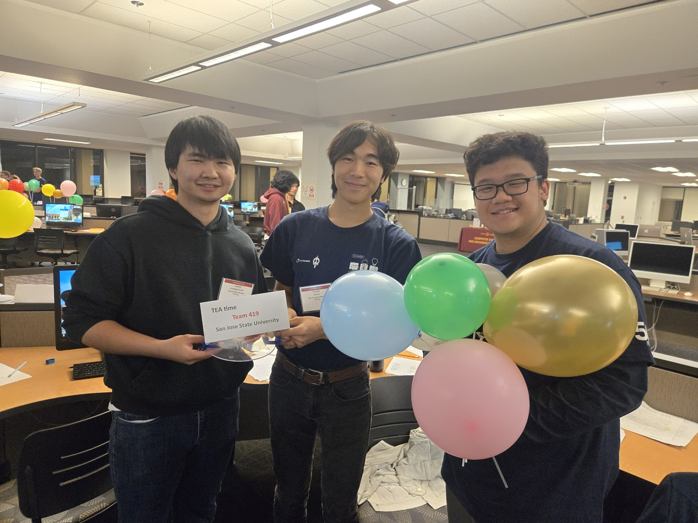
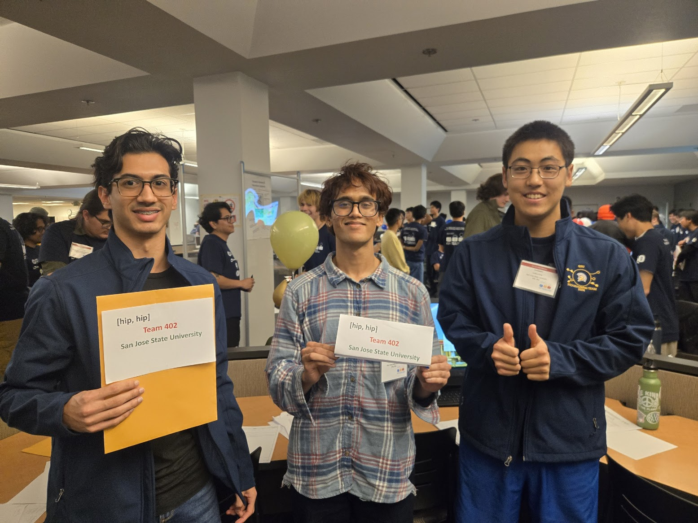
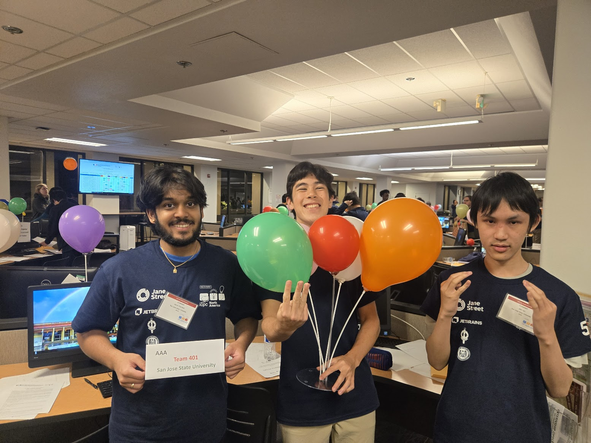
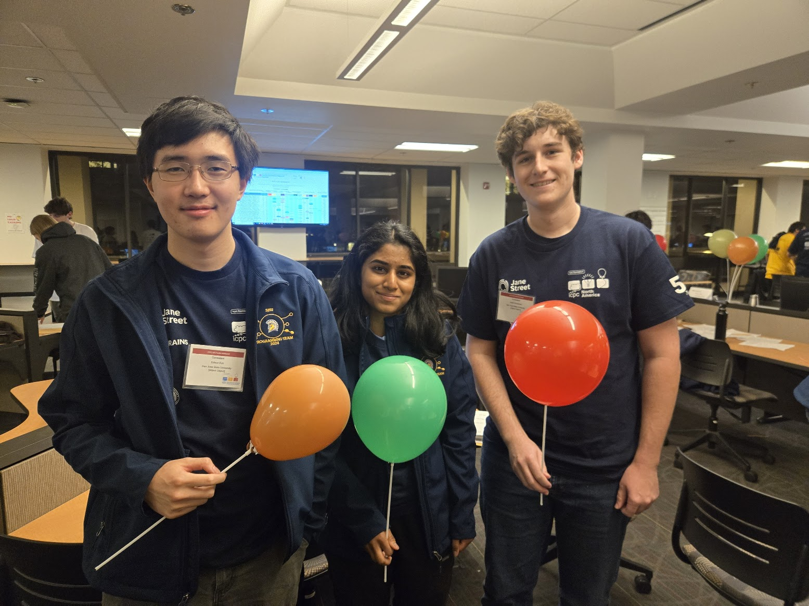
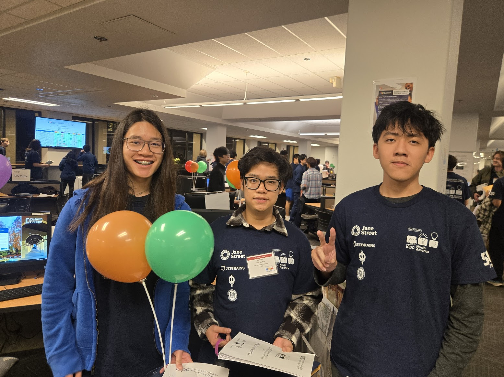
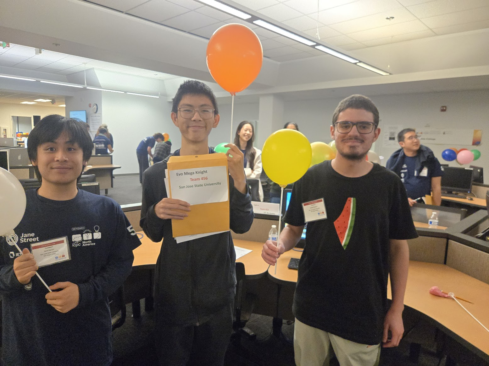

2025 SJSU Competitive Programming Team
Team Trainers: Eliot Hall and Aarya Chamkeri
Division 1 Teams
TEA Time - 6th/69 (going to nationals)
- Theon Olaivar
- Eliot Hall
I'm Eliot Hall, a third-year Computer Science student. I enjoy ballroom partner dance, piano, and cooking! Oh, and did I mention I like competitive programming? - Amarjargal Ayurzana
[hip, hip] - 18th/69
- Noah Ruderman
I enjoy solving puzzles and problem solving. I like programming on various platforms. Outside of school, I love hiking and biking. I'm always curious to learn more about computers and encompassing technologies! - Dhiraj Pritham Bomma
- Curtis Zhang
Hello, I'm Curtis Zhang, a sophomore at SJSU majoring in Computer Science, and I'm currently interested in running, reading novels, and competitive programming.
AAA - 29th/69
- Aarya Chamkeri
- Aidan Spies
In my free time, I like playing sports, working out, listening to music, watching shows, and hanging out. - Alan Ngo
I love learning about science and cool facts about the universe.
[object Object] - 38th/69
- Edison Fuh
I am a 4th year majoring in Computer Science student that likes systems and solving problems. My favorite algorithm/strategy is counting, I just think it's neat. - Anika Manjesh
I love problem-solving, math, and staying active! - Justin Greatorex
I am a Software Engineering major graduating in December of 2025. I have industry experience with Mainframe programming that involves working with low-level debugging and high performance code.
TBD2 - 44th/69
- Ching Yeung Kwok
- Thuc Bao Tran
My name is Thuc Bao Tran, and I'm a freshman majoring in Computer Engineering. This is my first time participating in ICPC! - Tung Ba Le
My hobbies: Chess, Billiard and Swimming. A fun fact: Bubble tea is my favourite drink
Division 2 Team
Evo Mega Knight - 3rd Place, California Site
- David Nguyen
Second year Data Science student. Enjoys gaming, fishing, and eating pasta. - Isaiah Mak
- Chahid Bagdouri
Majoring in Computer Science, graduating in 2027. Obsessed with exploring how things work.